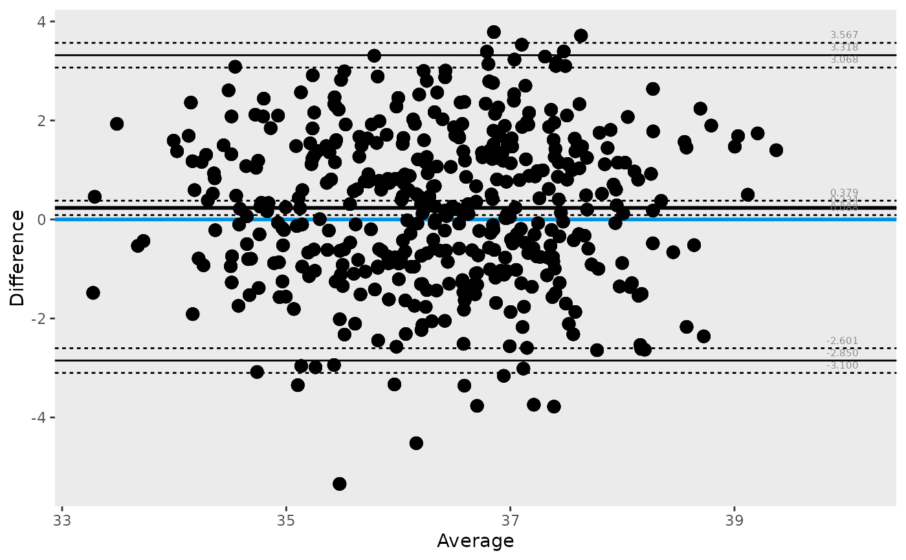
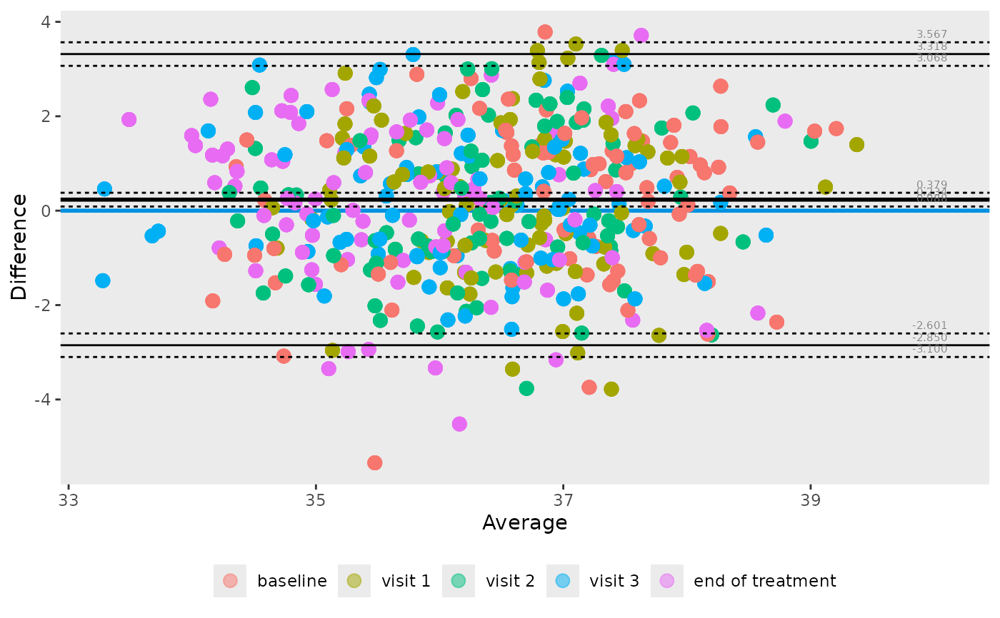
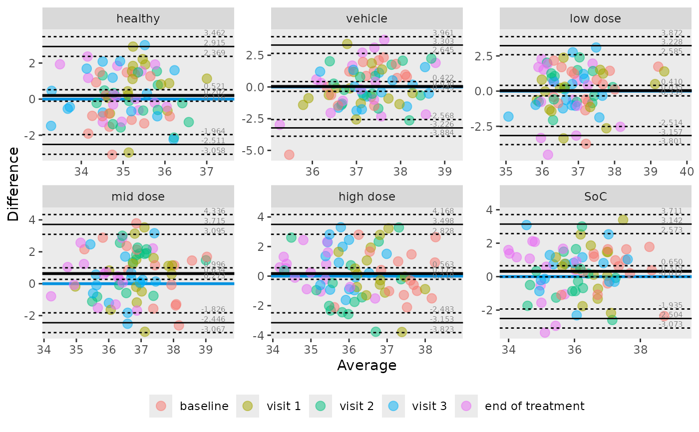

Plot Bland-Altman statistics
ba_plot(
data = stop("data must be specified"),
var1 = stop("variable must be specified"),
var2 = stop("variable must be specified"),
label = NULL,
group = NULL,
colour = NULL,
shape = NULL,
xlab = "Average",
ylab = "Difference",
title = NULL,
caption = NULL,
alpha = 0.05,
point_size = 3,
point_alpha = 0.5,
transform = c("identity", "log", "logit")
)A data frame
1st variable to compare (unquoted)
2nd variable to compare (unquoted)
data label (unquoted)
grouping variable used for faceting (unquoted)
colour aesthetic for scatter points (unquoted)
shape aesthetic for scatter points (unquoted)
The text for the x-axis label
The text for the y-axis label
plot title
plot caption
alpha level for the intervals
size of the scatter points (passed to ggplot2::geom_point)
opacity of the scatter points (passed to ggplot2::geom_point)
Transformation applied before computing statistics. One of "identity"
(default), "log", or "logit". Delegates to ba_mean_diff.
ggplot2::ggplot object
library(tidyr)
tbl <- temperature |> pivot_wider(names_from = method, values_from = temperature)
# simple example
ba_plot(data = tbl, var1 = infrared, var2 = rectal)
#> Warning: Using `by = character()` to perform a cross join was deprecated in dplyr 1.1.0.
#> ℹ Please use `cross_join()` instead.
#> ℹ The deprecated feature was likely used in the ggBA package.
#> Please report the issue to the authors.

# with colors
ba_plot(data = tbl, var1 = infrared, var2 = rectal, colour = visit)

# with colors and faceting
ba_plot(data = tbl, var1 = infrared, var2 = rectal, group = treatment, colour = visit)
